Новый взгляд на Мамай
( 10 - 11 марта 2007 )
день 1й - день 2й
|
Утро. Мост. Снег. Высота. Давно хотели попробовать
прыгнуть. Попробовали :) Оказалось, что на перилах оч трудно стоять,
да и высоты маловато. Но что не сделаешь ради интересных кадров
:) |
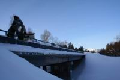
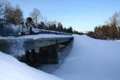
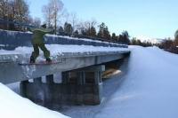
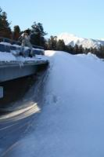
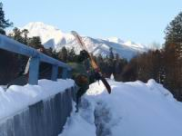
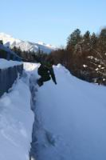
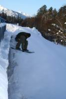
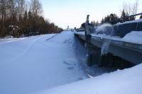
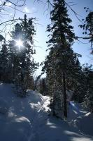
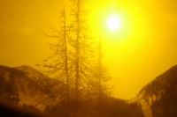
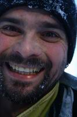
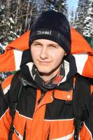
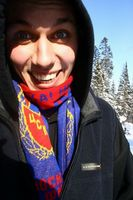
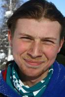
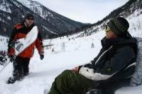 Три
новобранца, Антон, Андрей и Костя затропили на Учебный склон и
принялись расписывать его цепочками из дуг и падений. Сил на спуск
уходило даже больше, чем на подъем :) но ребята мужественно вкушали
все прелести фрирайда... |
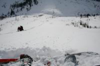
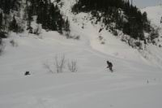
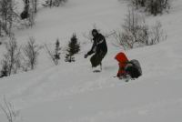
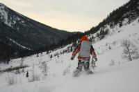
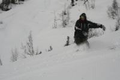
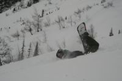
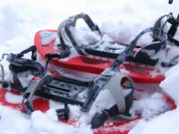 Бывалые
бойцы , Лёха Иркутский, Лёха Слюдянский и Вова Язык поднялись
по народной тропе до Трех Берез, где попили чаю с итальянским
шоколадом, одели снегоступы и взяли курс на центральный Мамай
и далее на запад, насколько хватит сил и времени... Немного в
сторону от того места, где был уже не раз и все сразу становится
по другому. Переступаешь невидимую границу и начинаешь смотреть
на привычные склоны с другой стороны, а уж сколько открывается
нового и еще не катанного ! |
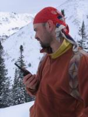
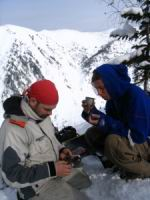
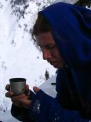
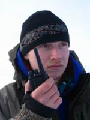
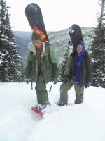
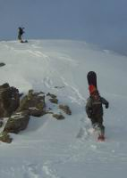
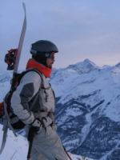
Закат провожали возле вершины Западный Мамай, от которой в сторону Осиновки идет мега-поле, гигантская воронка сверху до низу, леса нет даже на противоположном берегу напротив кулуара, похоже лавины здесь совсем не детские сходят. Ну да нам сегодня на Осиновку не надо, поедем через северный цирк Мамая. |
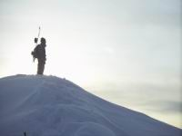
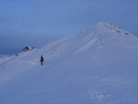
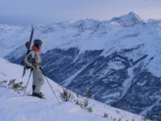
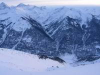
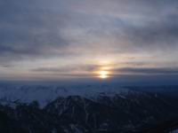
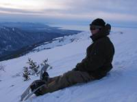
Стартанули с гребня и попали на очень ровный склон - ни одной кочки, ноги даже не чувствуют, что под ними с бешенной скоростью пролетают сотни метров!
Дальше был свободный транзит через лесной кулуар и медитативный спуск по минимальному уклону, где доски-корабли оставляли ровные дорожки. После такой расслабухи весьма кстати был могул по засыпанному ручью. Этот последний участок надо бы получше изучить, чтобы прокатывать его без остановок, ведь сюда легко можно попасть и с Трех Берез.
Хоть и долог в марте световой день, однако сегодня мы возвращались в сумерках. Заглянули на огонек к гостеприимным ангарчанам, которые всегда угостят чем-то крепким и вкусным :) Ну как тут не пригласить Нестера со товарищами в зимуху - уж очень хочется послушать про Большие Горы Кавказа! |
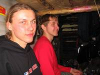
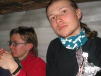
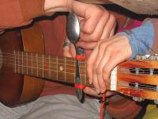
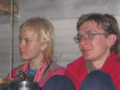
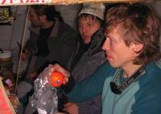
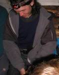
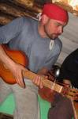
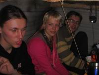
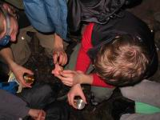
Из-за отсутствия одной струны и наличием другой, гитару Лёха настраивал каким-то ложечно-веревочным способом, прошу прощение, забыл как это называется, смотрите фото :) Спето, выпито и скушано было как надо, очень даже хорошо и замечательно посидели в количестве 11 человеков...
А ведь завтра в планах встать пораньше, прыгать с трамплина, катануть по новым кулуарам в северный цирк, затропить на северный гребень и впервые полностью катануть кулуар напротив зимухи! Так что продолжение смотрите здесь... |
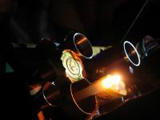
Март 2007
Текст: Белокрылов Алексей
Фото: Климов Антон, Пестов Алексей, Белокрылов Алексей